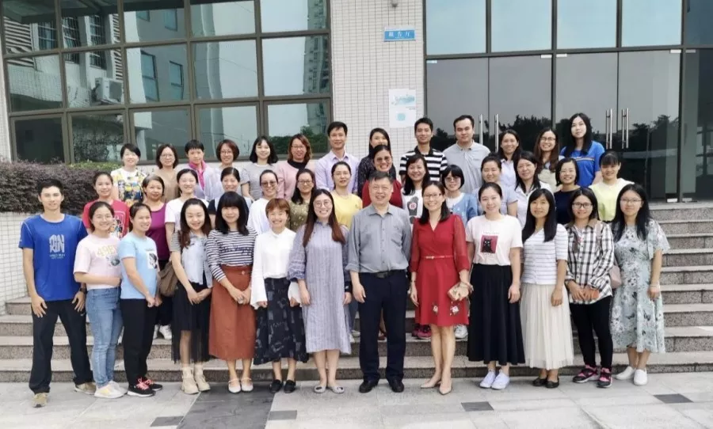
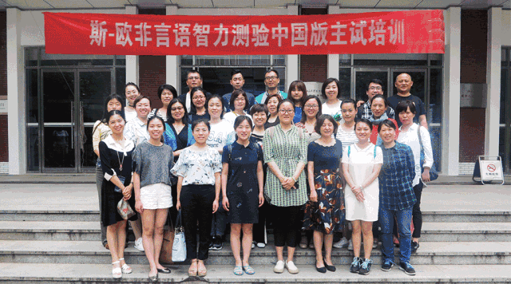

资讯 > 资讯中心

2019年海珠区特殊教育评估教师团队专项研训活动
本次专项研训的主题为“非言语认知能力临床评估技术实操”，海珠区教育发展中心邀请了北京联合大学特殊教育学院原院长、中国残疾人康复协会副理事长许家成教授和韦氏资深测评师、实操讲师周辰老师担任主讲老师。本次研训的重点内容是学习《斯—欧非言语智力测验（6-40岁）中国版》。

斯-欧非言语智力主试资格（北京）培训班
本公司作为一家专业心理测评服务机构，多年来在心理测量技术应用领域累积了丰富的经验，拥有一支专业严谨的心理测评专家团队，致力于为全国各地从事儿童心理卫生工作的人员提供权威、科学、前沿的心理测量技术培训，并一直致力于最新量表的推广与使用。